Écran 1
Tableau de bord
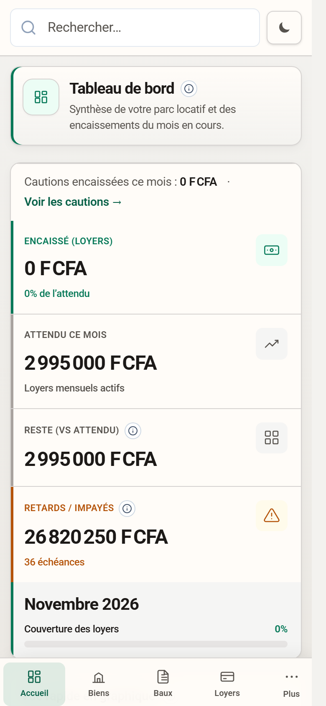

Gestion locative · Côte d'Ivoire
Gérez vos locations comme un pro, depuis votre téléphone.
Illustrations avec données fictives (démo Abidjan). Aucun client réel.
Entre le cahier, Excel et les appels WhatsApp, on perd vite le fil des loyers.
Une relance oubliée, une quittance à refaire, une caution dont on ne sait plus où elle est…
L'agence prend souvent plus de 8 % : vous voulez garder le contrôle et l'argent chez vous.
Écran 1

Écran 2
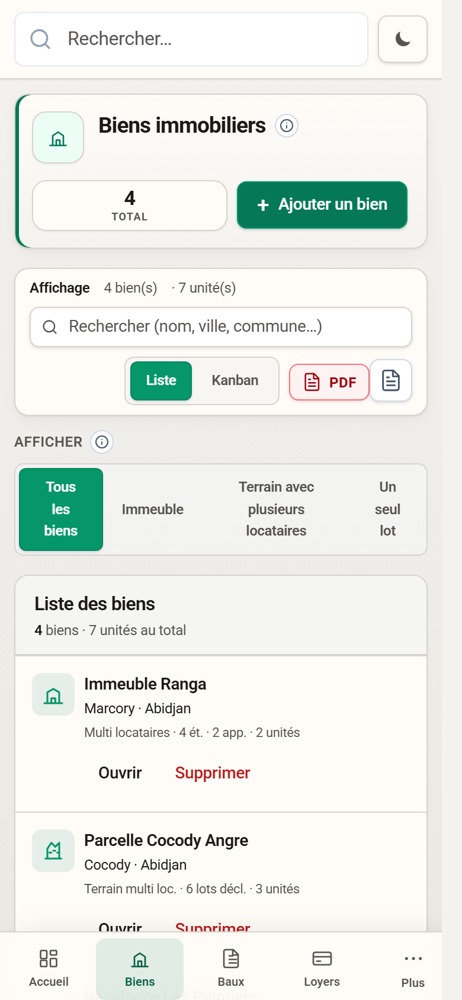

Écran 3
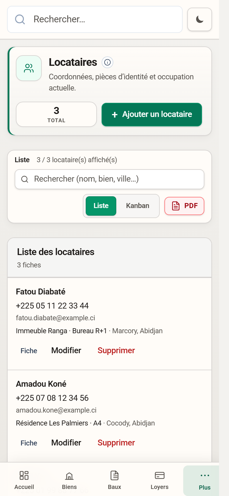
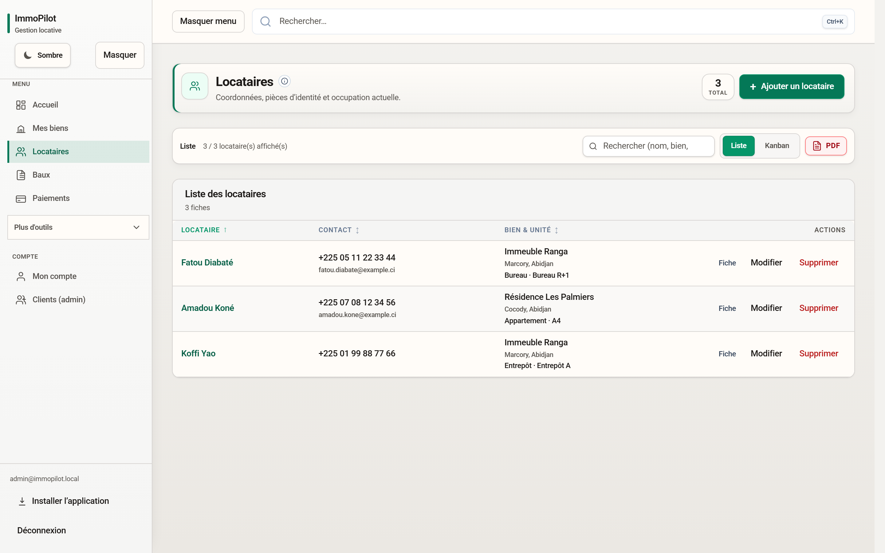
Écran 4

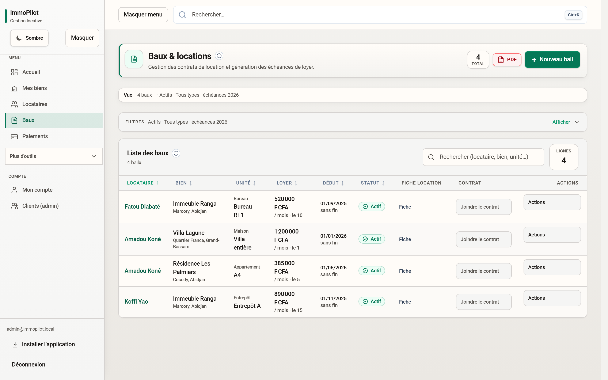
Écran 5


Écran 6
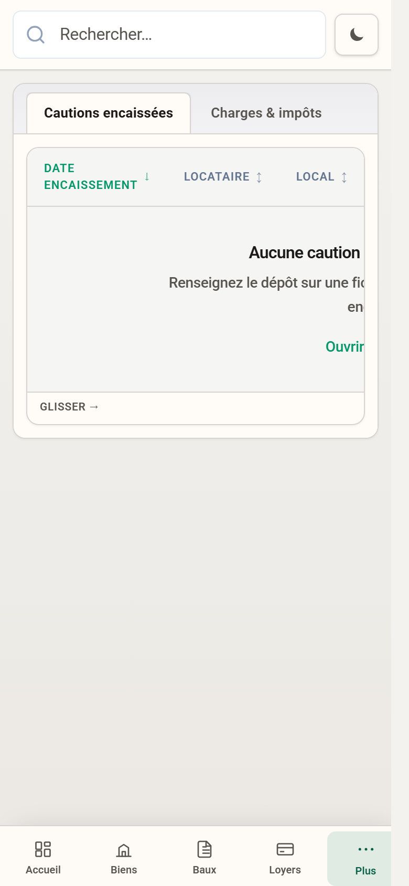
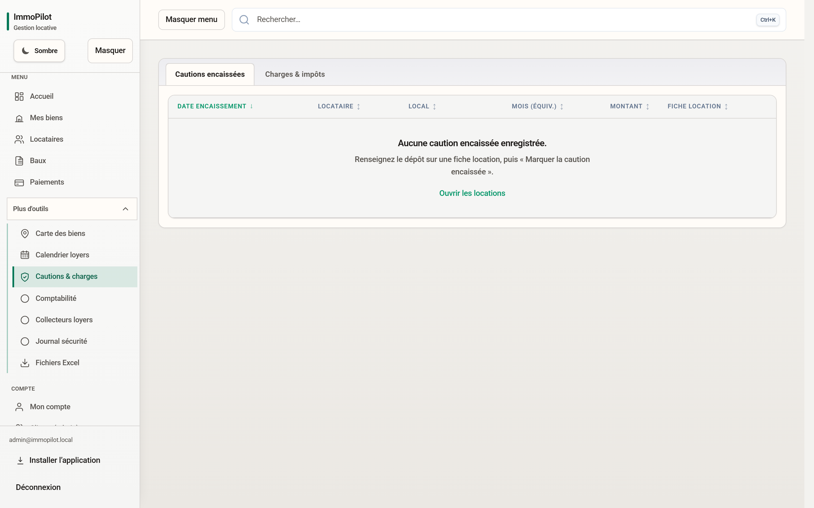
Écran 7

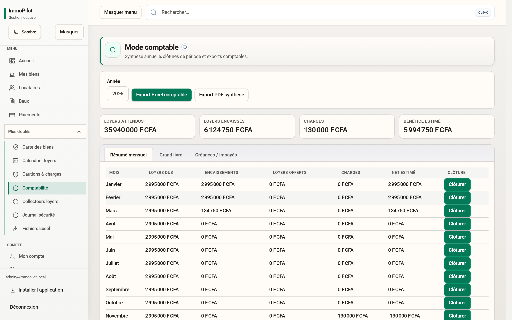
Écran 8
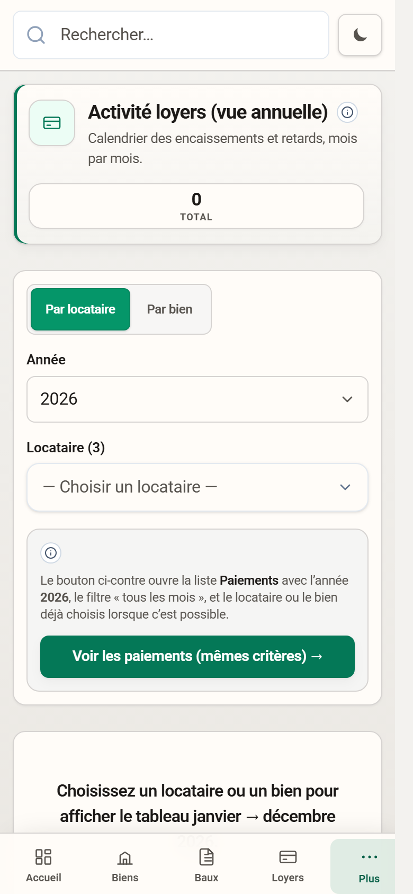
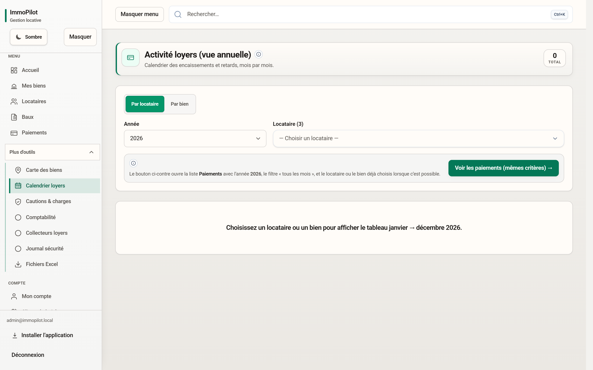
Écran 9
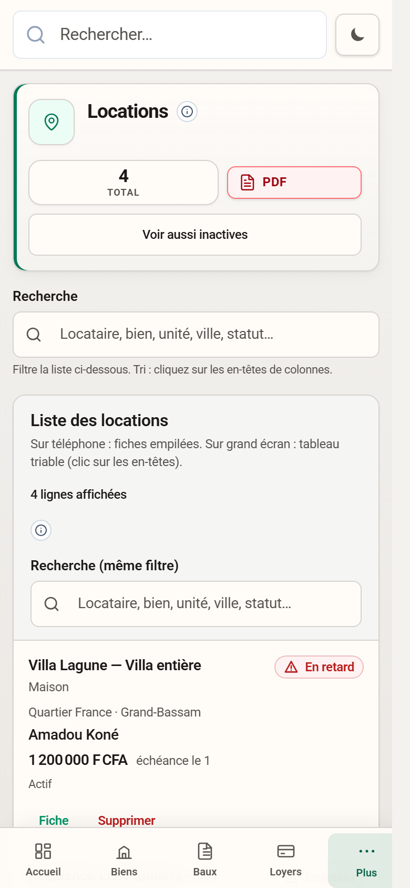
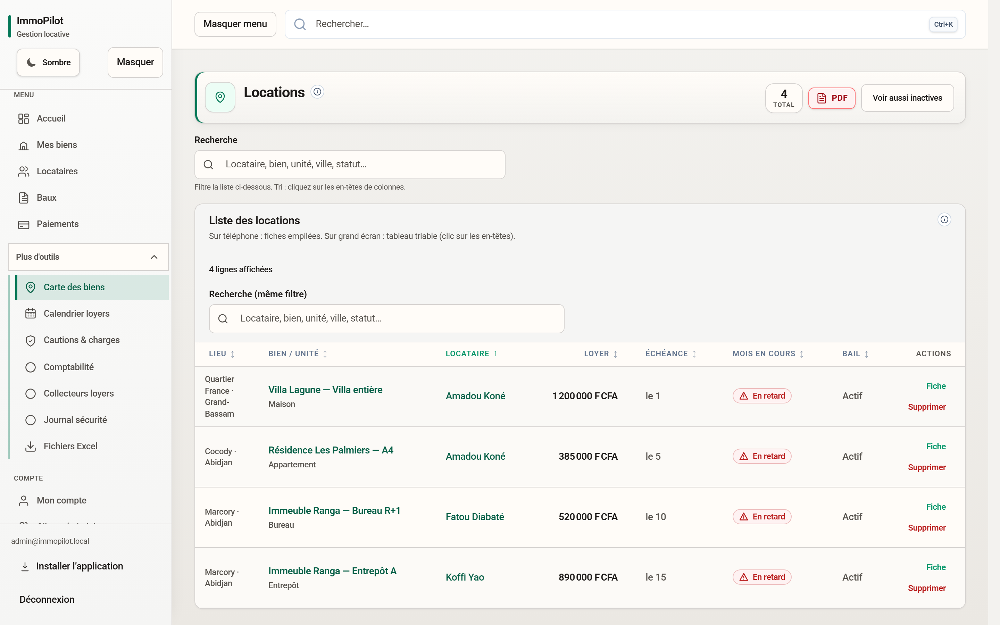
Écran 10
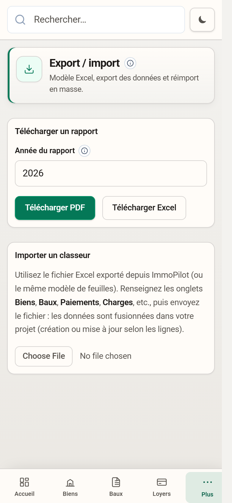
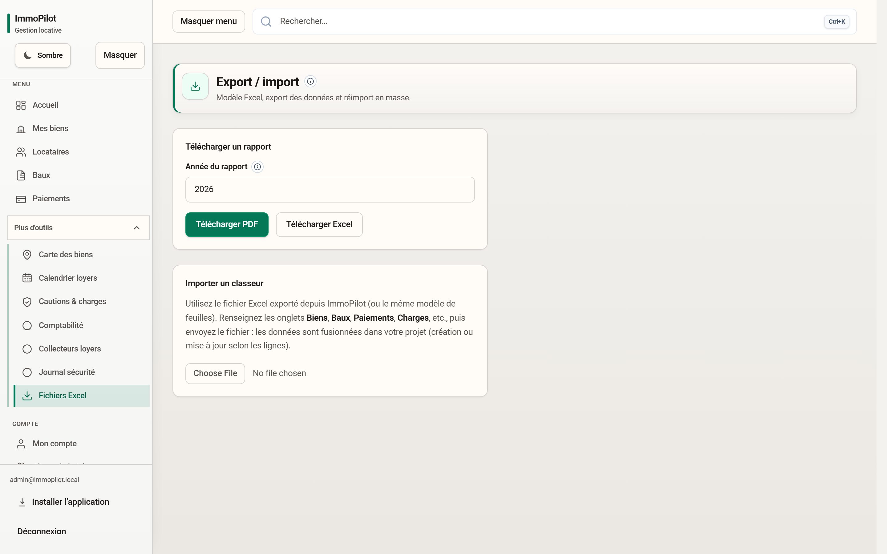
Écran 11
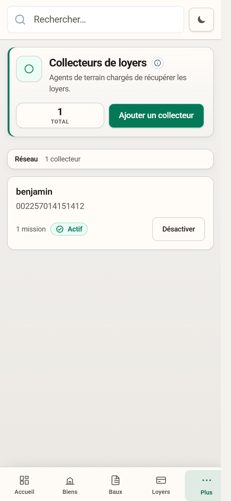
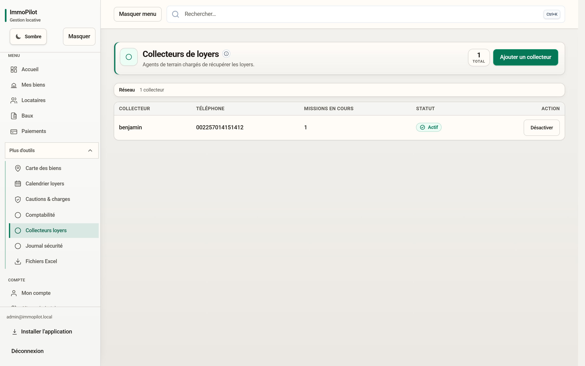
Écran 12
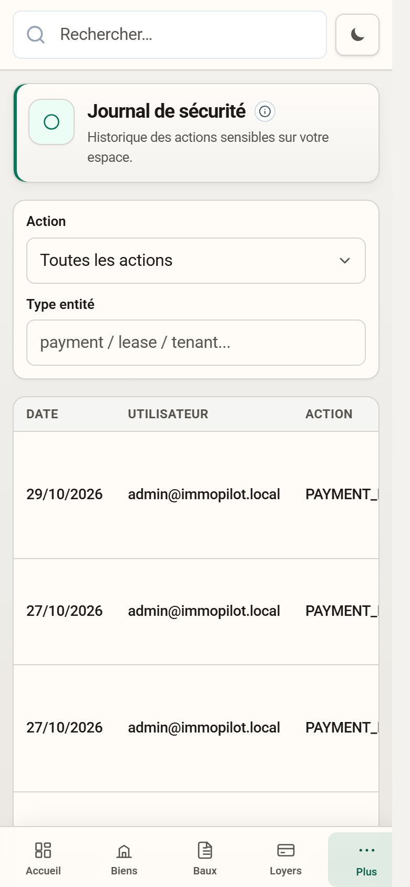
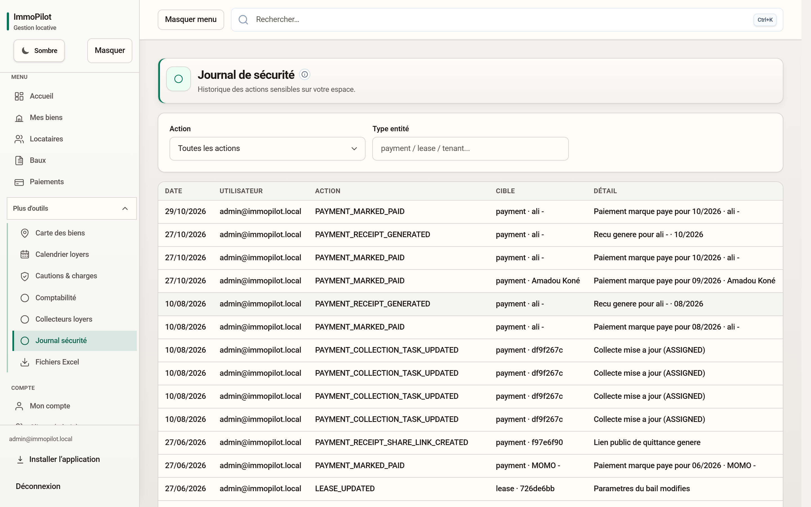
ImmoPilot s'installe comme une application (PWA) : bouton d'installation dans le programme.
Fonctionne sur Android et iPhone via le navigateur ; thème clair ou sombre.
Pensé pour une utilisation au quotidien sur réseau mobile.
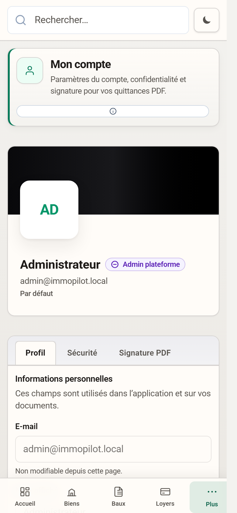
Les montants ne sont pas encore configurés dans l’application. Renseignez les champs ci-dessous avant diffusion.
| Formule | Mensuel | Inclus |
|---|---|---|
| Essai | À définir | Accès complet pendant la période d’essai · Toutes les fonctions du tableau de bord |
| Gratuit | 0 | Fonctions de base · Limite d’unités à définir |
| Pro | À définir | Biens, locataires, baux et paiements illimités (selon forfait) · Quittances PDF |
Mobile Money, espèces, virement — modes à confirmer avec le commercial
Mes locataires paient en espèces, ça marche ?
Oui. Vous saisissez chaque encaissement avec le mode « espèces » (ou autre) et vous générez le reçu PDF.
Je n'ai que mon téléphone ?
Oui. L'interface est pensée pour le mobile ; l'ordinateur donne plus d'espace pour les listes longues.
Mes données sont-elles à moi ?
Vous gérez votre organisation ; l'export Excel permet de récupérer vos données.
Puis-je importer mon Excel ?
Oui, via la page Fichiers Excel et le modèle fourni (avec avertissements si une ligne est refusée).
Combien de logements puis-je gérer ?
Selon la formule choisie (limites à définir dans pricing.json — actuellement non codées dans l'app).
Les relances sont-elles automatiques ?
Vous pouvez enregistrer des relances e-mail et noter les relances WhatsApp ; l'envoi automatique complet n'est pas encore proposé.
Que se passe-t-il si j'arrête l'abonnement ?
Exportez vos données avant arrêt ; conditions contractuelles à préciser avec le commercial.
Paiement en ligne pour les locataires ?
Non disponible aujourd'hui : encaissement saisi par vous ou votre collecteur.
C'est pour les agences ?
L'outil convient surtout au bailleur qui gère seul ; les fonctions « relevé propriétaire » agence sont prévues plus tard.
Où sont les montants en F CFA ?
Tous les montants s'affichent en francs CFA avec séparateurs lisibles.
À compléter
Vos biens. Vos loyers. Votre sérénité.
Gérez vos locations comme un pro, depuis votre téléphone.